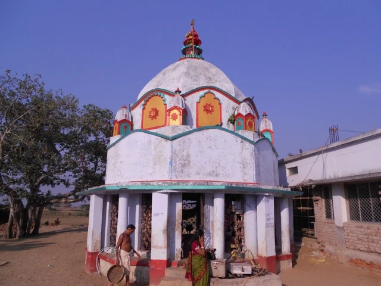
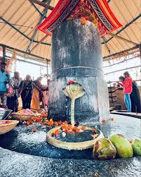

Baba Bhusandeswar Temple


Baba Bhusandeswar Temple
Baba Bhusandeswar Temple - Asia's Largest Shiva Linga is located at Bhograi Block, Kumbhirgadi village of Balasore district, Odisha, India.
Description
The 12 feet long and 14 feet width lingam is carved out on a black granite and only half of the lingam is visible. The other half has remained buried for years. The lingam has three parts. The middle portion of the lingam is octagonal in shape, about 12 feet in diameter and nearly four feet in height. The Lingam slightly leans towards the right side.
Mythology
There is a mythological story behind this temple — according to the local beliefs at the time of the tretaya yuga, the Demon King Ravana was blessed by Lord Shiva and gifted this Shiva Lingam. But Lord Shiva warned him not to place the Lingam anywhere. Ravana was on his way with Lingam on his Pushpak vimana(a Airway flying vehicle). The angels or Gods were disappointed and thought to seize the power of Ravana, which he brought from Lord Shiva. In the meantime, Ravana felt desperate and planted the Linga at this place. He tried to lift again but failed because it was heavy. For a long time, the Shiva Linga was in the wild.